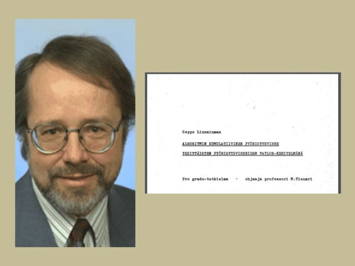

"Deep learning (also known as deep structured learning) is part of a broader family of machine learning methods based on artificial neural networks with representation learning. Learning can be supervised, semi-supervised or unsupervised, is a class of machine learning algorithms that uses multiple layers to progressively extract higher-level features from the raw input. For example, in image processing, lower layers may identify edges, while higher layers may identify the concepts relevant to a human such as digits or letters or faces."
History and Development
Timeline of Deep Learning
1943
McCulloch Pitts Neuron – Beginning
The history of deep learning dates back to this year when Warren McCulloch and Walter Pitts created a computer model based on the neural networks of the human brain. Warren McCulloch and Walter Pitts used a combination of mathematics and algorithms they called threshold logic to mimic the thought process. Since then, deep learning has evolved steadily, over the years with two significant breaks in its development.
1960
The First Backpropagation Model
The development of the basics of a continuous Back Propagation Model is credited to Henry J. Kelley.
1962
Backpropagation With Chain Rule
Stuart Dreyfus came up with a simpler version based only on the chain rule in. The concept of back propagation existed in the early 1960s but only became useful until 1985.
1965
Birth Of Multilayer Neural Network
The earliest efforts in developing deep learning algorithms date to this year, when Alexey Grigoryevich Ivakhnenko and Valentin Grigorʹevich Lapa used models with polynomial (complicated equations) activation functions, which were subsequently analysed statistically.
1970
Backpropagation Is Computer Coded
Back propagation, the use of errors in training Deep Learning models, evolved significantly. This was when Seppo Linnainmaa wrote his master’s thesis, including a FORTRAN code for back propagation. Unfortunately, the concept was not applied to neural networks until 1985

1979
Neocognitron – First CNN Architecture
Convolutional neural networks were first used by Kunihiko Fukushima who designed the neural networks with multiple pooling and convolutional layers.
Kunihiko Fukushima developed an artificial neural network, called Neocognitron , which used a multi-layered and hierarchical design. The multi-layered and hierarchical design allowed the computer to learn to recognize visual patterns. The networks resembled modern versions and were trained with a reinforcement strategy of recurring activation in multiple layers, gaining strength over time.
1985
Boltzmann Machine
David H. Ackley, Geoffrey Hinton and Terrence Sejnowski create Boltzmann Machine that is a stochastic recurrent neural network. This neural network has only input layer and hidden layer but no output layer.
1985
Implementation Of Backpropagation
This was when Rumelhart, Williams, and Hinton demonstrated back propagation in a neural network could provide “interesting” distribution representations. Philosophically, this discovery brought to light the question within cognitive psychology of whether human understanding relies on symbolic logic (computationalism) or distributed representations (connectionism).
1986
Restricted Boltzmann Machine
Paul Smolensky comes up with a variation of Boltzmann Machine where there is not intra layer connection in input and hidden layer. It is known as Restricted Boltzmann Machine (RBM). It would become popular in years to come especially for building recommender systems.
1989
CNN Using Backpropagation
Yann LeCun applied the standard backpropagation algorithm, which had been around as the reverse mode of automatic differentiation since 1970, to a deep neural network with the purpose of recognizing handwritten ZIP codes on mail. While the algorithm worked, training required 3 day.
1991
Vanishing Gradient Problem Appears
Sepp Hochreiter identifies the problem of vanishing gradient which can make the learning of deep neural network extremely slow and almost impractical. This problem will continue to annoy deep learning community for many more years to come.
1997
LSTM
Sepp Hochreiter and Jürgen Schmidhuber publishes a milestone paper on “Long Short-Term Memory” (LSTM). It is a type of recurrent neural network architecture which will go on to revolutionize deep learning in decades to come.
2006
Deep Belief Network
Publications by Geoff Hinton, Ruslan Salakhutdinov, Osindero and Teh showed how a many-layered feedforward neural network could be effectively pre-trained one layer at a time, treating each layer in turn as an unsupervised restricted Boltzmann machine, then fine-tuning it using supervised backpropagation.
2009
ImageNet Is Launched
Finding enough labeled data has always been a challenge for Deep Learning community. In 2009 Fei-Fei Li, a professor at Stanford, launches ImageNet which is a database of 14 million labeled images. It would serve as a benchmark for the deep learning researchers who would participate in ImageNet competitions (ILSVRC) every year.
2012
AlexNet Starts Deep Learning Boom
AlexNet, a GPU implemented CNN model designed by Alex Krizhevsky, wins Imagenet’s image classification contest with accuracy of 84%. It is a huge jump over 75% accuracy that earlier models had achieved. This win triggers a new deep learning boom globally.
2014
The Birth Of GANs
Generative Adversarial Neural Network also known as GAN is created by Ian Goodfellow. GANs open a whole new doors of application of deep learning in fashion, art, science due it’s ability to synthesize real like data.
Some prominent architectures
Deep Learning Architecture is separated to 2 different kind of learning that are: Supervised Learning and Unsupervised Learning.
In this presentation, we will look at the top 5 widely-used deep learning architectures ,their designs, variations ,their advantages and disadvantages, and there are:
CNN are the popular choice of neural networks for different Computer Vision tasks such as image recognition,… .
There are 4 steps in designing a CNN:
Convolution: The input signal is received at this stage
Subsampling: Inputs received from the convolution layer are smoothened to reduce the sensitivity of the filters to noise or any other variation
Activation: This layer controls how the signal flows from one layer to the other, similar to the neurons in our brain
Fully connected: In this stage, all the layers of the network are connected with every neuron from a preceding layer to the neurons from the subsequent layer.
A sample CNN in action
Advantages
Disadvantages
Very good for visual recognition
Once a segment within a particular sector of an image is learned, the CNN can recognize that segment present anywhere else in the image
CNN is highly dependent on the size and quality of the training data
Highly susceptible to noise
*A Few popular CNN: LeNet-5, AlexNet, VGG-16,Inception….
2. Recurrent Neural Networks (RNN)
RNN have been very popular in areas where the sequence in which the information is presented is crucial. So, they have a lot of real-world applications such as natural language processing, speech synthesis and machine translation.
Over the years, quite a few varieties of RNNS have been researched and developed:
Bidirectional RNN – The output in this type of RNN depends not only on the past but also the future outcomes
Deep RNN – In this type of RNN, there are multiple layers present per step, allowing for a greater rate of learning and more accuracy
Advantages
Disadvantages
Unlike a traditional neural network, an RNN shares the same parameters across all steps. This greatly reduces the number of parameters that we need to learn
RNNs can be used along with CNNs to generate accurate descriptions for unlabeled images
RNNs find it difficult to track long-term dependencies. This is especially true in case of long sentences and paragraphs having too many words in between the noun and the verb.
RNNs cannot be stacked into very deep models. This is due to the activation function used in RNN models, making the gradient decay over multiple layers.
3. Autoencoders
Autoencoders apply the principle of backpropagation in an unsupervised environment. Autoencoders, interestingly, have a close resemblance to Principal Component Analysis except that they are more flexible. Some applications of Autoencoders is anomaly detection – for instance, detecting fraud in financial transactions in banks. The core task of it is to identify and determine what constitutes regular, normal data and then identify the outliers or anomalies.
There are 4 major types of Autoencoders:
Vanilla autoencoder – the simplest form of autoencoders there is, i.e. a neural net with one hidden layer
Multilayer autoencoder – when one hidden layer is not enough, an autoencoder can be extended to include more hidden layers
Convolutional autoencoder – In this type, convolutions are used in the autoencoders instead of fully-connected layers
Regularized autoencoder – this type of autoencoders use a special loss function that enables the model to have properties beyond the basic ability to copy a given input to the output.
A basic representation of Autoencoder
Advantages
Disadvantages
Autoencoders give a resultant model which is primarily based on the data rather than predefined filters
Very less complexity means it’s easier to train them
Training time can be very high sometimes
If the training data is not representative of the testing data, then the information that comes out of the model can be obscured and unclear
Some autoencoders, especially of the variational type, cause a deterministic bias being introduced in the model
4. Generative Adversarial Networks
The basic premise of Generative Adversarial Networks (GANs) is the training of two deep learning models simultaneously. These deep learning networks basically compete with each other – one model that tries to generate new instances or examples is called as the generator. The other model that tries to classify if a particular instance originates from the training data or from the generator is called as the discriminator.
GANs was a concept by Ian Goodfellow in 2014, and have large applications in Computer Vision, especially image generation.
General architecture of GAN
Advantages
Disadvantages
Per Goodfellow, GANs allow for efficient training of classifiers in a semi-supervised manner
Because of the improved accuracy of the model, the generated data is almost indistinguishable from the original data
Generator and discriminator working efficiently is crucial to the success of GAN. The whole system fails even if one of them fails
Both the generator and discriminator are separate systems and trained with different loss functions. Hence the time required to train the entire system can get quite high.
5. ResNets
As you know, CNNs are highly useful when it comes to solving image classification and visual recognition problems. But when the tasks become more complex, training of the neural network starts to get a lot more difficult, as additional deep layers are required to compute and enhance the accuracy of the model. Residual learning is a concept designed to tackle this problem, and the resultant architecture is known as a ResNet.
A ResNet consists of a number of residual modules – where each module represents a layer. Each layer consists of a set of functions to be performed on the input. The depth of a ResNet can vary greatly – the one developed by Microsoft researchers for an image classification problem had 152 layers
A basic building block of ResNet
Advantages
Disadvantages
ResNets are more accurate and require less weights than LSTMs and RNNs in some cases
They are highly modular. Hundreds and thousands of residual layers can be added to create a network and then trained.
ResNets can be designed to determine how deep a particular network needs to be.
If the layers in a ResNet are too deep, errors can be hard to detect and cannot be propagated back quickly and correctly. At the same time, if the layers are too narrow, the learning might not be very efficient.
Some recent outstanding achievements of Deep learning
1. Google Neural Machine Translation
Google Neural Machine Translation (GNMT) is a neural machine translation (NMT) system developed by Google that uses an artificial neural network to increase fluency and accuracy in Google Translate.
That very idea was realized by Google engineers at the end of 2016. Architecture of NN was build on the seq2seq model.
The only exception is that between the encoder and decoder there are 8 layers of LSTM-RNN that have residual connections between layers with some tweaks for accuracy and speed.
The system requires a “token” at the beginning of the input sentence which specifies the language you’re trying to translate the phrase into.
This improves translation quality and enables translations even between two languages which the system hasn’t seen yet, a method termed “Zero-Shot Translation.”
The key outcome: closing down the gap with humans in accuracy of the translation by 55–85% (estimated by people on a 6-point scale). It is difficult to reproduce good results with this model without the huge dataset that Google has
Lip reading is the ability of recognizing what is being said only from visual information
Google Deepmind, in collaboration with Oxford University, reported in the article, “Lip Reading Sentences in the Wild” on how their model, which had been trained on a television dataset, was able to surpass the professional lip reader from the BBC channel.
There are 100,000 sentences with audio and video in the dataset. Model: LSTM on audio, and CNN + LSTM on video. These two state vectors are fed to the final LSTM, which generates the result (characters).
Different types of input data were used during training: audio, video, and audio + video. In other words, it is an “omnichannel” model.
3. Synthesizing Obama: synchronization of the lip movement from audio
The University of Washington has successfully done a specific task of learning to generate video of Obama from his voice and stock footage. The choice fell on him due to the huge number of his performance recordings online (17 hours of HD video).
Here is the model of this idea
4. OCR: Google Maps and Street View
Text recognition in a natural environment is a challenging computer vision and machine learning problem
In 2017, Google Brain Team has introduced a new OCR (Optical Character Recognition) engine into its Maps, through which street signs and store signs are recognized.
Their algorithm achieves 84.2% accuracy on the challenging French Street Name Signs (FSNS) dataset, significantly outperforming the previous state-of-the-art systems
To recognize each sign, the network uses up to four of its photos. The features are extracted with the CNN, scaled with the help of the spatial attention (pixel coordinates are taken into account), and the result is fed to the LSTM.
5. GANs
One of the hottest topics in Deep Learning is Generative Adversarial Networks (GANs)
Generative adversarial networks (GANs) are a class of neural networks that are used in unsupervised machine learning. Most often, this idea is used to work with images.
The idea is in the competition of two networks — the generator and the discriminator. The first network creates a picture, and the second one tries to understand whether the picture is real or generated.
They help to solve some tasks like:
Image retrieval for historical archives
Text translation into images
Drug discovery
6. Pix2pix
One of the eye-catching articles of 2016 is, “Image-to-Image Translation with Conditional Adversarial Networks” by Berkeley AI Research (BAIR). Researchers solved the problem of image-to-image generation, when, for example, it was required to create a map using a satellite image, or realistic texture of the objects using their sketch.
7. CycleGAN
In order to apply Pix2Pix, you need a dataset with the corresponding pairs of pictures from different domains. However, if you want to do something more complicated like “transfiguring” objects or styling, then pairs of objects cannot be found in principle.
Therefore, authors of Pix2Pix decided to develop their idea and came up with CycleGAN for transfer between different domains of images without specific pairs — “Unpaired Image-to-Image Translation.”
The idea is to teach two pairs of generator-discriminators to transfer the image from one domain to another and back, while we require a cycle consistency
8. Learning robots
In OpenAI, they have been actively studying an agent’s training by humans in a virtual environment, which is safer for experiments than in real life.
In one of the studies, the team showed that one-shot learning is possible: a person shows in VR how to perform a certain task, and one demonstration is enough for the algorithm to learn it and then reproduce it in real conditions.
9. Movement in complex environments
There is another study from DeepMind which is about teaching the robot complex behavior (walk, jump, etc.), and even do it similar to the human. This will involve a lot about loss function to encourage the desired behavior. However, it would be preferable that the algorithm learned complex behavior itself by leaning with simple rewards.
Researchers managed to achieve this: they taught agents (body emulators) to perform complex actions by constructing a complex environment with obstacles and with a simple reward for progress in movement.
The result is impressive (with sound)
10. Self-driving cars
The self-driving car sphere is intensively developing, and the cars are actively tested. Some of the pioneers in this field are Tesla, Google Waymo, Volvo, etc... Even though there are many scandals recently related to the safety of it, autonomous car is still a prominent technology in the future. Deep learning has taken over the major subfields of autonomous driving through 4 pillars
For further explanation of how Deep Learning affects each of these modules on:Becominghuman